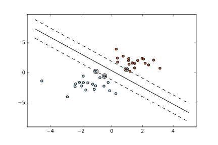
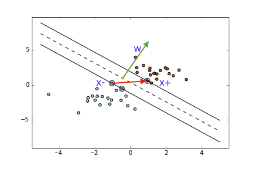

Introduction to Machine Learning and Data Mining
Support Vector Machines
Kyle I S Harrington / kyle@eecs.tufts.edu
Some slides adapted from Patrick Winston, A. Zisserman, Carlos Guestrin, R. Berwick, Scikit Learn
Finding the Margin: Constraints
We constrain $\vec{w}$ and b such that
$+ cases \geq 1$ and $- cases \leq -1$
$\vec{w} \cdot \vec{x}_{+} + b \geq 1$ and $\vec{w} \cdot \vec{x}_{-} + b \leq -1$
Finding the Margin: Constraints
Now define $y_i = -1 \vee 1$ to indicate class label
Multiply our previous constraint equations by $y_i$
$y_i (\vec{w} \cdot \vec{x}_{i} + b ) \geq 1$
and
$y_i (\vec{w} \cdot \vec{x}_{i} + b ) \geq 1$
$y_i$ was negative for this case, hence $\geq \rightarrow \leq$
Finding the Margin: Constraints
Using the same formulation introduce another constraint:
For $x_i$ within the margin:
$y_i (\vec{w} \cdot \vec{x}_{i} + b ) - 1 = 0$
We still don't know where the lines are, but we have more constraints!
Finding the Margin: Width
Support vectors pass through at least 1 point of their respective class.
Therefore, there is some vector between 2 points along the positive and negative SVs
Finding the Margin: Width
We can express the width of the margin as
$width = ( \vec{x}_{-} - \vec{x}_{+} ) \cdot \frac{ \vec{w} }{|\vec{w}|}$
Finding the Margin: Width
Apply the constraint for $x_i$ that lie within the margin:
$y_i (\vec{w} \cdot \vec{x}_{i} + b ) - 1 = 0$
Rearrange the constraint, and substitute $y_i=1$ (for now, consider only positive cases)
$y_i (\vec{w} \cdot \vec{x}_{i} + b ) - 1 = 0$
$\vec{w} \cdot \vec{x}_{i} = 1 - b$
Finding the Margin: Width
$width = ( \vec{x}_{-} - \vec{x}_{+} ) \cdot \frac{ \vec{w} }{|\vec{w}|}$
$width = \frac{ \vec{x}_{+} \cdot \vec{w} }{|\vec{w}|} - \frac{ \vec{x}_{-} \cdot \vec{w} }{|\vec{w}|}$
Now substitute from our constraint:
$\frac{ \vec{x}_{+} \cdot \vec{w} }{|\vec{w}|} = \frac{ 1 - b }{|\vec{w}|}$
For the negative term:
$\frac{ \vec{x}_{-} \cdot \vec{w} }{|\vec{w}|} = \frac{ -1 - b }{|\vec{w}|}$
Finding the Margin: Width
Now substitute back into the width equation
$width = \frac{ \vec{x}_{+} \cdot \vec{w} }{|\vec{w}|} - \frac{ \vec{x}_{-} \cdot \vec{w} }{|\vec{w}|}$
$width = \frac{ 1 - b }{|\vec{w}|} - \frac{ -1 - b }{|\vec{w}|}$
$width = \frac{2}{|\vec{w}|}$
Finding the Margin: Optimization
Our goal is to maximize the width of the margin, therefore we want to maximize $\frac{1}{|\vec{w}|}$ or alternatively, minimize $|\vec{w}|$
For mathematical convenience let's find the values of $\vec{w}$ and $b$ that minimize $\frac{|\vec{w}|^2}{2}$
Finding the Margin: Optimization
We also need to maintain our constraints when optimizing:
$y_i ( \vec{w} \cdot \vec{x}_i + b ) - 1 = 0$
The Lagrangian:
$L = \frac{|\vec{w}|^2}{2} - \sum \alpha_i [ y_i ( \vec{w} \cdot \vec{x}_i + b ) - 1]$
$\frac{\delta L}{\delta \vec{w}} = \vec{w} - \sum \alpha_i y_i \vec{x}_i$
To find an extrema, $ \frac{\delta L}{\delta \vec{w}}= 0$
$\vec{w} = \displaystyle \sum_i \alpha_i y_i \vec{x}_i$
Finding the Margin: Optimization
We need to differentiate with respect to $b$ as well
$\frac{\delta L}{\delta b} = - \sum x_i y_i$
To find an extrema, $\frac{\delta L}{\delta b} = 0$
$\sum \alpha_i y_i = 0$
Finding the Margin: Optimization
Let's return to the expression we're optimizing:
$L = \frac{|\vec{w}|^2}{2} - \sum \alpha_i [ y_i ( \vec{w} \cdot \vec{x}_i + b ) - 1]$
The first term can now be rewritten with
$\vec{w} = \displaystyle \sum_i \alpha_i y_i \vec{x}_i$
as
$\frac{|\vec{w}|^2}{2} = \frac{1}{2}( \sum \alpha_i y_i \vec{x}_i ) \cdot ( \sum \alpha_i y_i \vec{x}_i )$
Finding the Margin: Optimization
Let's return to the expression we're optimizing:
$L = \frac{|\vec{w}|^2}{2} - \sum \alpha_i [ y_i ( \vec{w} \cdot \vec{x}_i + b ) - 1]$
The second term can be rewritten with
$\vec{w} = \displaystyle \sum \alpha_i y_i \vec{x}_i$
$\sum \alpha_i y_i \vec{x}_i ( \sum \alpha_i y_i \vec{x}_i ) - \sum \alpha_i y_i b + \sum \alpha_i$
Rearrange b and apply $\sum \alpha_i y_i = 0$ to remove "$b \sum \alpha_i y_i$":
$\sum \alpha_i y_i \vec{x}_i ( \sum \alpha_i y_i \vec{x}_i ) + \sum \alpha_i$
Finding the Margin: Optimization
Recombine the previous simplifications:
$L = \frac{1}{2} ( \sum \alpha_i y_i \vec{x}_i ) \cdot ( \sum \alpha_i y_i \vec{x}_i ) - \sum \alpha_i y_i \vec{x}_i \cdot ( \sum \alpha_i y_i \vec{x}_i ) + \sum \alpha_i$
More simplification:
$L = \sum \alpha_i - \frac{1}{2} \displaystyle \sum_i \displaystyle \sum_j \alpha_i \alpha_j y_i y_j \vec{x}_i \cdot \vec{x}_j$
This is what we want to optimize!
SVM and Kernels
Use a transformation $\phi(\vec{x})$ and operate in a different space
Our optimization target is then:
$L = \sum \alpha_i - \frac{1}{2} \displaystyle \sum_i \displaystyle \sum_j \alpha_i \alpha_j y_i y_j \phi (\vec{x}_i) \cdot \phi (\vec{x}_j)$
Our decision rule is then:
If $\sum \alpha_i y_i \phi( \vec{x}_i ) \cdot \phi( \vec{U} )+ b \geq 0$, then positive class
Note that $\phi$ only occurs as $\phi (\vec{x}_i) \cdot \phi (\vec{x}_j)$
SVM and Kernels
Now we define a kernel function $K( x_i, x_j ) = \phi (\vec{x}_i) \cdot \phi (\vec{x}_j)$
We only ever have to compute $K( x_i, x_j )$, not $\phi$
This is called the kernel trick
Our optimization target is then:
$L = \sum \alpha_i - \frac{1}{2} \displaystyle \sum_i \displaystyle \sum_j \alpha_i \alpha_j y_i y_j K( x_i, x_j )$
Our decision rule is then:
If $\sum \alpha_i y_i K( x_i, x_j )+ b \geq 0$, then positive class
Kernels


Example kernels:
- Linear: $\vec{U} \cdot \vec{V}$
- Polynomial: $(\vec{U} \cdot \vec{V} + 1)^n$
- Radial basis functions: $e^{-\frac{| U - V |}{\sigma}}$